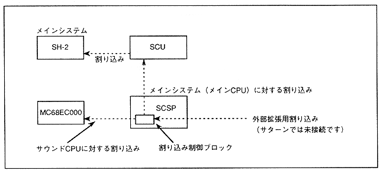

To interrupt the sound CPU from the main system, use the SCSP interrupt register (details will be described later). It is executed by writing "1B" to bit 5 of the interrupt register (SCIPD) from the main system.
∙ All interrupts for the sound CPU can be used as interrupts for the main CPU.
Refer to the register description for interrupts from the sound system to the main system.
Figure 1.5 Interrupt relationship

∙ The auto vector method is used for interrupting the sound CPU. The vector table is shown in Table 1.2.
∙ The interrupt level for the sound CPU can be set to a different level for each interrupt factor (refer to the register description for settings).